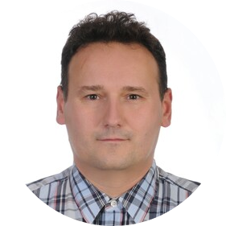

|  |
Mariusz KlińskiNokia SRA #335 International and Traversal Projects Expert I'm working for Orange Innovations as a My Contact details |
I AM PERSON THAT IS WORKING HARD TO ACHIEVE GOALS THAT HAVE BEEN PLACED IN FRONT OF ME. I NEVER GIVE UP AND ALWAYS DOING MY BEST TO MEET EXPECTATIONS EVEN IF I KNOW THAT THEY HARD TO MEET. I ALWAYS HELP MY COLLEAGUES IF THEY ARE EXPERIENCING ISSUES WITH THEIR WORK. I CAN WORK INDEPENDENTLY AS WELL AS A PART OF A LARGER TEAM. MY WORDS CAN BE PROVEN NOT ONLY BY THE EXPERIENCE SHOWN BELOW, BUT ALSO BY THE OPINION OF PEOPLE I’VE BEEN WORKING WITH.
| Dates | Work |
|---|---|
| 2018 - Now | International and Traversal projects expert |
| 2014 - 2018 | Quality Assurance Engineer |